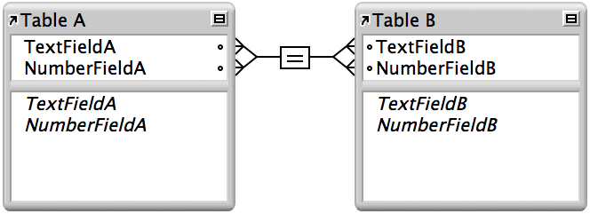
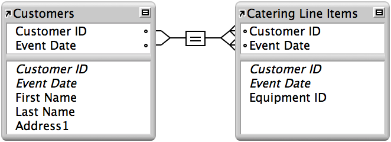

In a multicriteria relationship, you increase the number of match fields, which increases the criteria that FileMaker Pro Advanced evaluates before successfully joining related records. FileMaker Pro Advanced compares the values from each match field on each side of the relationship in the order in which the fields appear. This is called an AND comparison; to match successfully, every match field must find a corresponding value in the same record in the other table.

This relationship is defined with the following criteria:
Table | Field name | Comment |
TableA | TextFieldA | Match field to TextFieldB and NumberFieldB |
| NumberFieldA | Match field to TextFieldB and NumberFieldB |
TableB | TextFieldB | Match field to TextFieldA and NumberFieldA |
| NumberFieldB | Match field to TextFieldA and NumberFieldA |
According to the criteria in this relationship, a record in TableA with a TextFieldA value of Blue and a NumberFieldA value of 123 will only match records in TableB where both TextFieldB and NumberFieldB have values of Blue and 123, respectively. If TextFieldA and TextFieldB have matching values, but NumberFieldA and NumberFieldB do not, the relationship returns no related records.
Table | Record Number | Field name | Value | Related record? |
TableA | 1 | TextFieldA | Blue | Yes |
| 2 | TextFieldA | Blue | No |
| 3 | TextFieldA | Red | No |
TableB | 1 | TextFieldB | Blue | Yes |
| 2 | TextFieldB | Red | No |
| 3 | TextFieldB | Blue | Yes |
In this example, create a multicriteria relationship using a database that has these three tables:
•Equipment, which stores equipment rental inventory
•Customers, which stores customer names and addresses
•Catering Line Items, which stores a record of each equipment rental, including the equipment ID, the customer ID, and the event date
This database tracks equipment rentals and displays all rentals by a selected customer on a selected date.
1. The multicriteria relationship is between the Customers and Catering Line Items tables. Create these tables with the following fields:
Table | Field name | Comment |
Customers | Customer ID | Number field, auto-enter serial number; one of the match fields to the Catering Line Items table |
| Event Date | Date field; the other match field to the Catering Line Items table |
Catering Line Items | Customer ID | Number field; one of the match fields to the Customers table |
| Event Date | Date field; the other match field to the Customers table |
| Equipment ID | Number field |
2. In the Edit Relationship dialog box, define Customer ID and Event Date as the match fields in the relationship between the Customers and Catering Line Items tables.
3. In the Customers table, set the Customer ID field to auto-enter a serial number, giving each record in the Customers table a unique ID number.
4. In the Catering Line Items table, select Allow creation of records in this table via this relationship.
The tables in the relationships graph look like this:

5. Add a portal on the Customers layout, and add the Customers::Equipment ID field to the portal.
To create a new related record, enter the current date in the Customers::Event Date field and then an equipment ID number in the portal on the Customers layout.
Because Event Date is a match field and the relationship allows the creation of related records in the Catering Line Items table, the value in Customers::Event Date is automatically entered into the Catering Line Items::Event Date field.
To view rentals from a previous date, change the value in the Customers::Event Date field. FileMaker Pro Advanced displays all related records with the same customer ID and event date.